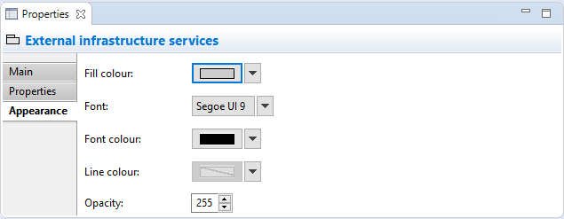

Selecting a Group in a View means that you can edit or view the following properties in the Properties Window.
The Main Tab

Editing the "Main" Properties for a Group
| Name: | The name of the Group |
| Documentation: | A space to enter some user documentation relating to the Group |
The Properties Tab
For more information about creating and managing User Properties see User Properties.
The Appearance Tab
Editing the "Appearance" Properties for a Group
| Fill colour: | Sets the fill colour for the Group. The "Default" button sets the fill colour to the default setting. |
| Font: | Sets the font used for the text in the Group. The "Default" button sets the font to the default setting as set in Preferences. |
| Font colour: | Sets the colour of the font used for the text in the Group. The "Default" button sets the fill colour to the default setting. |
| Line colour: | Sets the colour of the line used to draw the Group. The "Default" button sets the line colour to the default setting. If this is disabled it is because line colours are derived from the element's fill colour, as set in Preferences. |